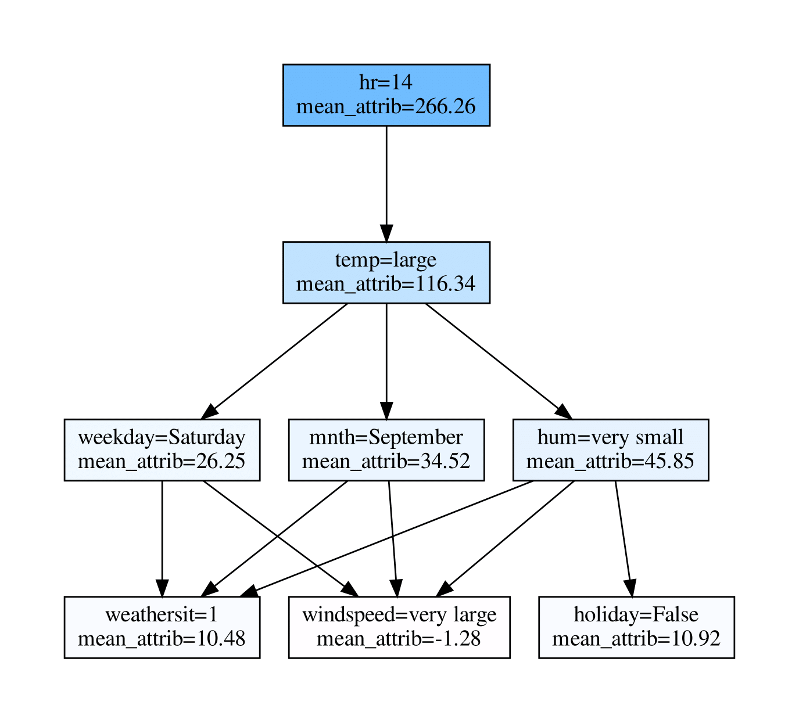

Contact me!
GlootDo is a teardrop trailer maker made as a team project for a object-oriented software engineering class. Prior to this project, I had never worked with Java. As a result, I had to adapt and learn more and more during the semester. Since it was the first project I did that had such a large extent, I also learned to plan and organize my work as a team. Learn more about the project by watching the short video!
On the 15th and 16th of March, I participated with 2 other friends in the Coveo Blitz 2022, a 24 hours challenge. We were presented a particular game that had precise rules and had to make a bot that would be the best at this game. This bot would be confronted to other teams' bots and, at the end of the 24 hours, a tournament was scheduled. To complete this task, we used Python and could test our bot locally using the provided Docker setup. In the end, we managed to go to the 3rd round (which means we were in the top 8 out of 32 teams). This hackathon made me realize how important good and clean code can be, even when the time is very limited.
During the 2021/2022 winter break, I decided to try web-developpement for the first time. Having never worked with HTML, CSS or Javascript before, I had a lot to learn. Through a week of reading and work, I managed to learn a lot about all of these 3 and even managed to produce the website on which you are reading this text. Since I am taking a web-developpement course in the winter 2022 semester, the skills I acquired will be further practiced. I will also learn more about web-developpement architecture, frameworks (e.g. Vue.js), RESTful API and many other things.
Université Laval - 2021
During the 2021 summer semester, I worked as a research intern at Université Laval. I was part of the DEEL project and was under the supervision of François Laviolette, PhD. I primarily worked on deep neural networks explainability. Among other things, I worked with ensemble methods and how to explain them concretely using partial orders and Hasse diagrams (see picture). Having never worked on machine learning prior to this internship, I had to challenge myself and had to learn a lot in a short period of time. I developped my skills in Python, e.g. with the Scikit-Learn library, and learned to use the Pytorch library.
